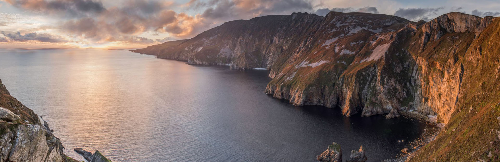

Donegal
Dramatic views, clifftop wonders and a land etched with history.

Dublin
The hub of politics, culture and music.

Killarney
Journey through timeless natural beauty, vibrant culture and rich history.